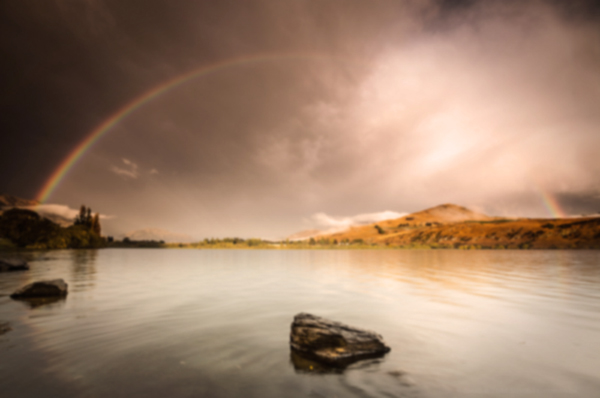
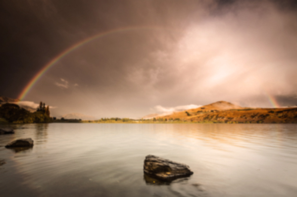

| - Capital | : Wellington |
| - Largest city | : Auckland |
| - Official languages | : English(96.1%), Maori(3.7%), NZ Sign Language(0.5%) |
| - Area | : Total 268,021 km2 (75th) 103,483 sq mi, Water(%) 1.6 |
| - Currency | : New Zealand dollar($) (NZD) |
| - Time zone | : NZST(UTC+12) (Summer(DST) : NZDT(UTC+13)) |
| - Drives on the | : Left |
New Zealand is located near the centre of the water hemisphere and is made up of two main islands and a number of smaller islands. The two main islands (the North Island, or Te Ika-a-Māui, and the South Island, or Te Waipounamu) are separated by the Cook Strait, 22 kilometres (14 mi) wide at its narrowest point. Besides the North and South Islands, the five largest inhabited islands are Stewart Island, the Chatham Islands, Great Barrier Island (in the Hauraki Gulf), d'Urville Island (in the Marlborough Sounds) and Waiheke Island (about 22 km (14 mi) from central Auckland). The country's islands lie between latitudes 29° and 53°S, and longitudes 165° and 179°E.

 
